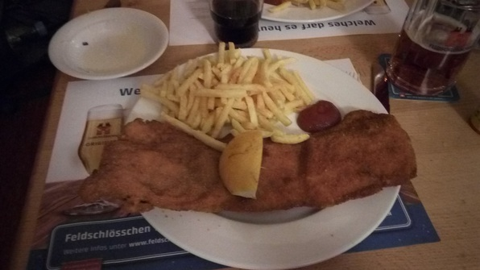

Higlights of the day:
- Had breakfast with Anna and her friend Esther on the roof–made myself French toast!
- Played lots of hoops. Got into an exceedingly violent game, because this one tall and burly yokel was beating everyone up and calling lots of fouls, which drove everyone else into a frenzy. Acquired a nifty bloody nose.
- Had dinner with the Aunties at this cool beer hall in Niederdorf. Got an absurdly huge Cordon Bleu, which is basically ham and cheese, fried and breaded. Nommmmm 
- Watched a movie with the Culmanners called “How to Be Single”, which I thought would be cheesy, and probably was, but was incredibly entertaining. There were a couple of times during the movie where I just couldn’t stop laughing. It was basically the misadventures of a couple of young women in New York trying to find… who knows what! Actually highly recommended.